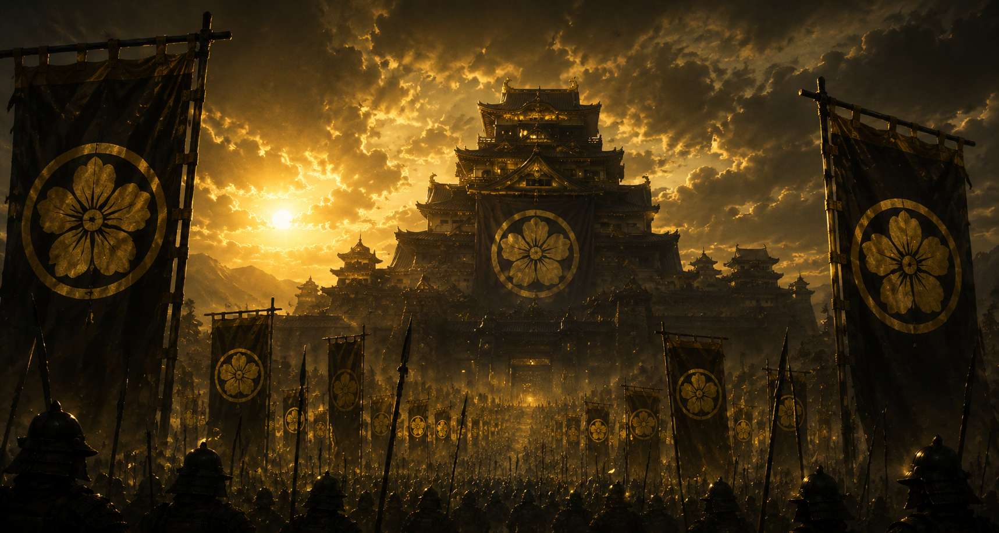
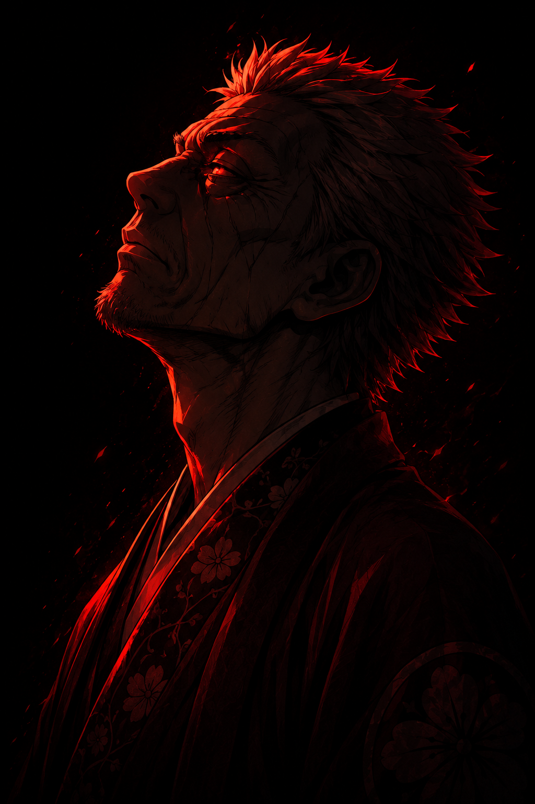
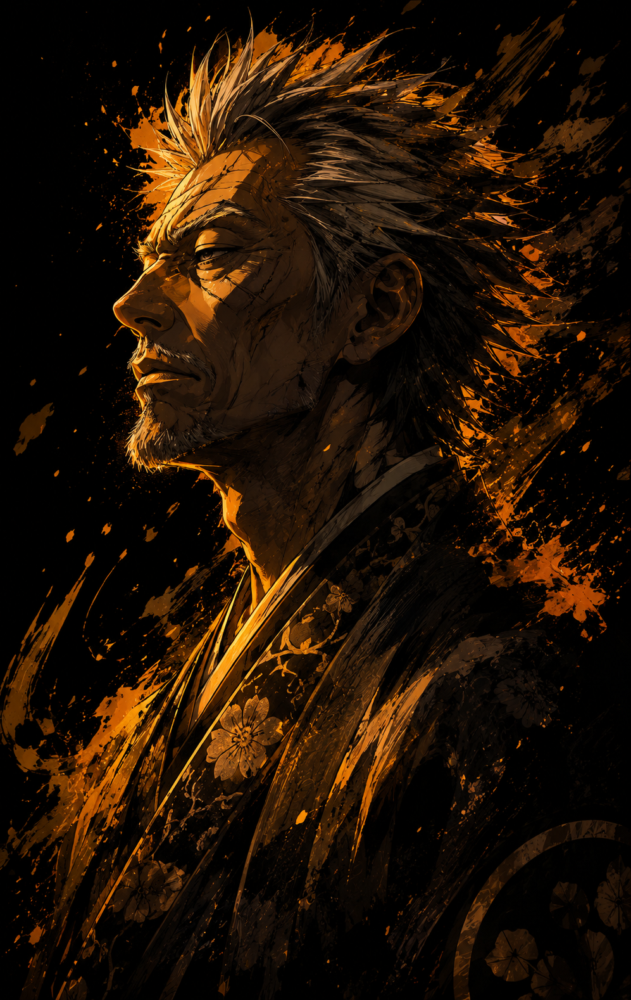
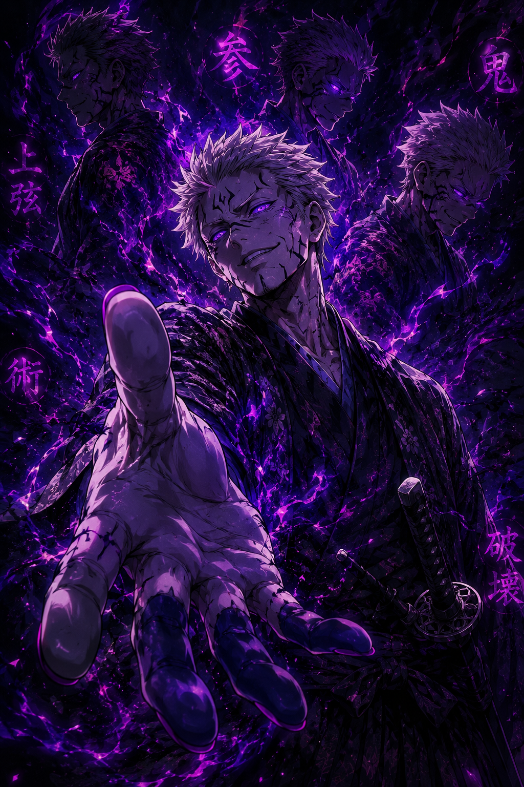

Alguns clãs nasceram para proteger. Os Onizuka nasceram para conquistar.
Muito antes do nome Onizuka espalhar terror pelas regiões do norte, a família era apenas uma pequena linhagem militar esquecida entre senhores feudais menores.
Mas enquanto outros líderes buscavam honra, os Onizuka aprenderam algo muito mais eficiente: o medo controla homens mais rápido do que respeito.
Geração após geração, o clã cresceu através de campanhas violentas, execuções públicas, alianças forçadas e domínio absoluto sobre territórios enfraquecidos.
Onde os Onizuka passavam, vilarejos desapareciam, famílias juravam submissão, e o silêncio tomava as estradas.

— Daikan Onizuka

Sob o comando de Daikan Onizuka, o clã alcançou o auge de seu poder.
Exércitos inteiros foram destruídos. Rotas comerciais passaram a pertencer aos Onizuka. E até clãs tradicionais começaram a se curvar diante do novo império.
Daikan não governava como um homem. Governava como uma calamidade.
Sua obsessão por força transformou soldados em máquinas de guerra, e o território Onizuka tornou-se conhecido como uma terra onde misericórdia simplesmente não existia.
Mas quanto maior o império crescia... mais algo sombrio crescia junto dele.

Rumores começaram a surgir entre soldados sobreviventes.
Homens desapareciam nas florestas. Corpos mutilados eram encontrados próximos das montanhas. E guerreiros Onizuka retornavam diferentes... violentos... irreconhecíveis.
Alguns acreditavam que o clã havia despertado algo antigo.
Outros diziam que os próprios Oni observavam os Onizuka há muito tempo.
Pela primeira vez, até os soldados mais leais começaram a temer aquilo que estavam servindo.

O homem responsável por transformar os Onizuka no clã mais temido do norte.

Criado em meio à brutalidade do império, Goratsu representa a nova geração de monstros produzida pelos Onizuka.

Nem homem. Nem Oni. Apenas um presságio caminhando entre as árvores.
Os Onizuka dominaram o norte. Mas talvez tenham despertado algo que jamais conseguirão controlar.
VOLTAR AOS CLÃS